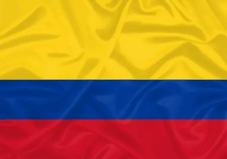

A história da Colômbia remonta a antes da chegada dos espanhóis às Américas, quando a região era habitada por tribos indígenas como os chincha, quimbaya e tairona. Estima-se que existissem comunidades na região desde 20.000 aC. Em 1525, a Colômbia foi ocupada pela Espanha, no âmbito do processo de colonização espanhola da América do Sul.
O Esporte na Colômbia é parte importante da cultura na sociedade colombiana. A modalidades mais populares são futebol,ciclismo,Ainda destacam-se halterofilismo, boxe.
A culinária da Colômbia nasceu do sincretismo das comidas europeia, especialmente espanhola, já que foi colônia ibérica por muitos anos; da África, pois os africanos desembarcaram em seu litoral nos séculos XVII e XVIII para realizar trabalho escravo, trazendo, consequentemente, sua cultura, e principalmente indígena, população nativa das montanhas andinas.
O idioma oficial da Colômbia e língua materna de quase todos os seus habitantes é o espanhol.
O clima na Colômbia é equatorial com temperaturas constantes quase o ano inteiro. É um clima determinado pelos ventos alísios, pela umidade e pela altitude sobre o nível do mar: quanto maior a altitude, mais baixa é a temperatura.
A religião predominante na Colômbia é o catolicismo, com 80% da população a ser católica. No entanto, desde 1991, a Constituição colombiana garante a adoração de outras religiões, como a anglicana, evangélica, presbiteriana e outras. A paisagem religiosa do país começou a mudar no início do século XX com a chegada de protestantes, como os batistas, e no final da década de 1960 com a modernização, urbanização e alfabetização, que levaram à popularização do pentecostalismo.